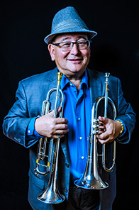

John is a Yamaha Performing Artist and plays Yamaha YTR9335NYS & YTR8340EM trumpets & YFL8315GS flugelhorn
Profile
JOHN L. WORLEY JR. is an accomplished trumpet/ flugelhorn/post-horn artist and leader of the bands Mo-Chi Quartet, WorlView and Bari Bari. He has played in many of the San Francisco Bay Area’s creative music ensembles, as well as on over 70 recordings & videos. Adept at a multitude of styles, he has played with and backed up national and international artists in North America, Europe, and Central America such as Mel Torme, Ella Fitzgerald, Don Byron, Wayne Shorter with the Monterey Jazz Festival Chamber Orchestra, the Carla Bley and Steve Swallow Big Band, Wayne Wallace, Jon Jang, the Asian American Orchestra, Dave Pell Octet, Pete and Sheila Escovedo, Malo, and Lila Downs.
His bands have participated in several music series and festivals, including the San Jose Jazz Summerfest and Winterfest, Monterey Jazz Festival, Jazz Project in Bellingham, WA, SF Jazz “Hotplate” and “Clock Tower” series, Stanford Jazz Festival, Kuumbwa Jazz Center, Pacifica Performances series, the “Jazz Katsu” fundraiser for tsunami aid in Japan, Yoshi’s Night Club, Intersection For The Arts, and the Sonoma Jazz Festival.
John is also an engaging & accomplished educator who teaches with enthusiasm, humor, and insight to a wide range of ages, experience levels, and proficiencies. He is a member of the music faculty at Stanford University in Stanford, CA, Hope St. Music Studios in Mountain View, CA and the San Jose Summer Jazz Camp. He is also a member of San Jose Jazz, BMI, American Federation of Musicians Local 6 and the International Trumpet Guild. In 2013, John was included in David Hickman’s book, Trumpet Greats, a biography of 2,200 trumpet players from 1600s to the present.
WorlView, John’s debut CD, was released in 2003 on his label, Dancing Sumo Records. He also produced jazz guitarist Sebastien Lanson’s debut recording, In Transition, on Dancing Sumo Records in 2004.
Performance Credits
- Tribute to Billie Holiday and Harry “Sweets” Edison 2015 at The Woodshed Music and Arts, San Jose, CA.
- Miles of Blue Project with the Mo-Chi Sextet-San Jose Jazz Summerfest 2014, San Jose Jazz “First Friday” series 2013, Pacifica Performances 2012
- Tribute to Miles Davis, with the Stanford Jazz Orchestra featuring John Worley. Bing Concert Hall, Stanford University 2014. (Music from the Miles and Gil Evans collaboration “Miles Ahead”).
- Mo-Chi Quartet-“John Worley Plays Miles Davis”-SF Jazz Hot Plate series 2013, The Great Band Leaders, Miles Davis featuring John Worley-Koret Discover Jazz Course, SF Jazz 2014.
- Mo-Chi Quartet-Jazz Katsu fund raiser for Japan Tsunami relief fund. 2012
- Lila Downs 2014 West Coast tour. Villa Montalvo-Saratoga, Crest Theater-Sacramento, The Fillmore-SF, City Winery-Napa, Greek Theater-LA
- Lila Downs 2013 West Coast tour. House of Blues-Las Vegas, Yerba Buena Gardens-SF, Rio Theater-Santa Cruz, Humphrey’s By The Sea-San Diego, Greek Theater-LA, Green Music Center, Sonoma State University-Cotati.
- Lila Downs 2012. Xlll Latin Grammy Awards Show, Univision–Mandalay Bay Resort-Las Vegas, “Sabado Gigantes” HP Pavillion-San Jose, Uptown Theater-Napa, Herbst Theater-SF
- Tribute to Freddie Hubbard-San Jose Jazz Winterfest 2013